Giải pháp hệ thống
5. Quy trình nhập kho thành phẩm / bán thành phẩm
Từ sản xuất vào kho thành phẩm, bán thành phẩm: tạo yêu cầu nhập kho, phát hành và dán tem, quét tem nhập kho bằng PDA và lập phiếu nhập kho.
5.1Yêu cầu nhập kho
Kho vận › Nhập kho thành phẩm
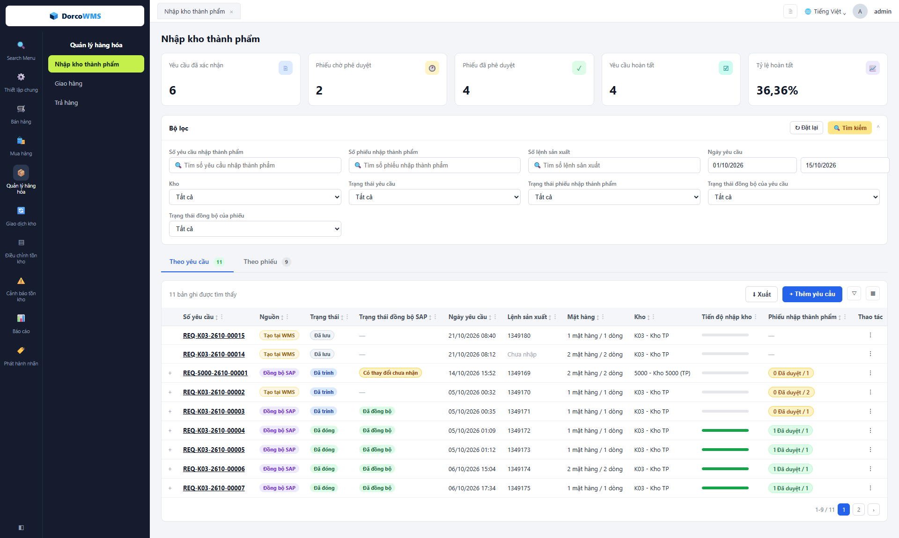
1 2 3 4 5 6 7 8 9- 1Thẻ tổng hợp: số yêu cầu đã xác nhận, phiếu chờ phê duyệt, phiếu đã phê duyệt, yêu cầu hoàn tất và tỷ lệ hoàn tất trong khoảng lọc.
- 2Bộ lọc: số yêu cầu, số phiếu, lệnh SX, ngày yêu cầu, kho; thêm hai lọc mới theo trạng thái đồng bộ của yêu cầu và của phiếu.
- 3Tab Theo yêu cầu / Theo phiếu: cùng một màn hình. Tab Theo phiếu là danh sách phiếu nhập kho (mục 5.4).
- 4Xuất và + Thêm yêu cầu: xuất danh sách ra Excel; tạo yêu cầu thủ công trên WMS.
- 5Nguồn: Đồng bộ SAP hoặc Tạo tại WMS, cho biết yêu cầu đến từ đâu.
- 6Trạng thái đồng bộ SAP: chỉ có với yêu cầu nguồn SAP; yêu cầu tạo tại WMS để trống (—).
- 7Tiến độ nhập kho: thanh tiến độ số lượng đã nhập so với số lượng yêu cầu.
- 8Phiếu nhập thành phẩm: số phiếu đã được duyệt trên tổng số phiếu lập cho yêu cầu (một yêu cầu có thể nhập nhiều lần).
- 9Thao tác (⋮): In, Sửa, Gửi, Xóa, Thêm phiếu… Nút hiện tùy theo nguồn và tình trạng của yêu cầu. Dấu + đầu dòng mở các dòng mặt hàng và tem.
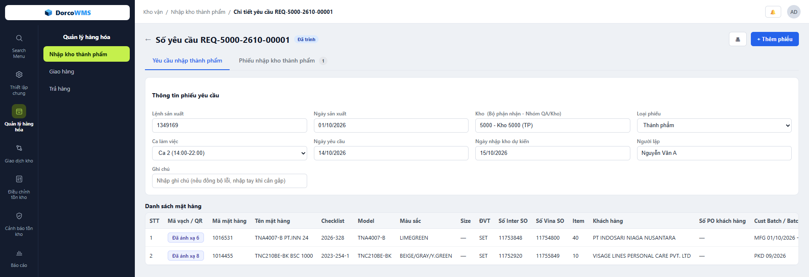
10 11 12 13 14 15- 10Số yêu cầu: số do WMS sinh, hiện trên tiêu đề.
- 11Nút thao tác: In yêu cầu, Sửa (chỉ yêu cầu tạo tại WMS), + Thêm phiếu để lập phiếu nhập kho từ yêu cầu này.
- 12Tab Yêu cầu / Phiếu nhập kho: tab thứ hai liệt kê các phiếu nhập đã lập cho yêu cầu, kèm số đếm.
- 13Thông tin yêu cầu: Lệnh SX, Ngày SX, Kho nhận, Ngày yêu cầu, Ngày nhập kho dự kiến, Ghi chú. Mỗi yêu cầu ứng với đúng một lệnh SX. Yêu cầu nguồn SAP chỉ xem.
- 14Danh sách mặt hàng: mã, tên, Model, Màu sắc, Inter SO, Vina SO, Khách hàng, PO, Batch, Số lô, Số lượng yêu cầu… Kéo ngang để xem hết cột.
- 15Mã vạch / QR: “Đã ánh xạ N”, bấm để xem tem của dòng, vị trí và lịch sử tem.
5.2Phát hành và dán tem
Phát hành nhãn › Phát hành tem thành phẩm / bán thành phẩm
5.3Quét tem nhập kho
Ứng dụng PDA › Nhập kho thành phẩm
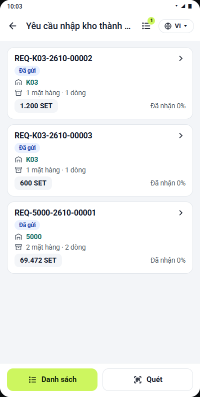
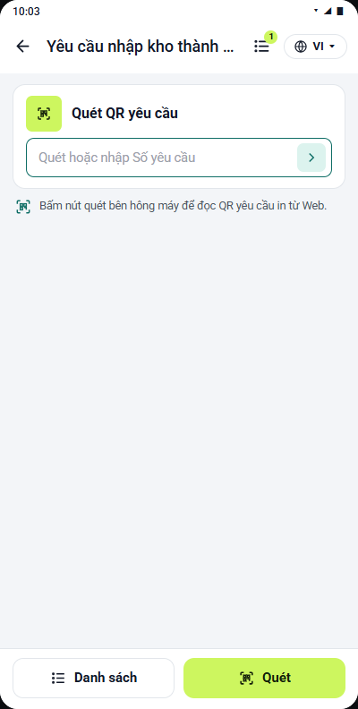
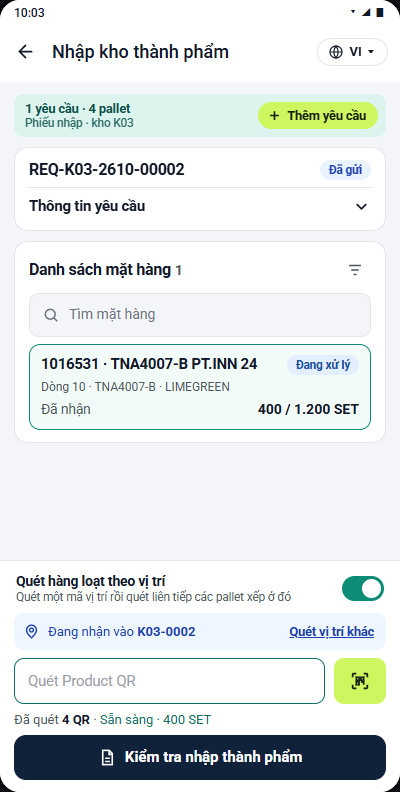
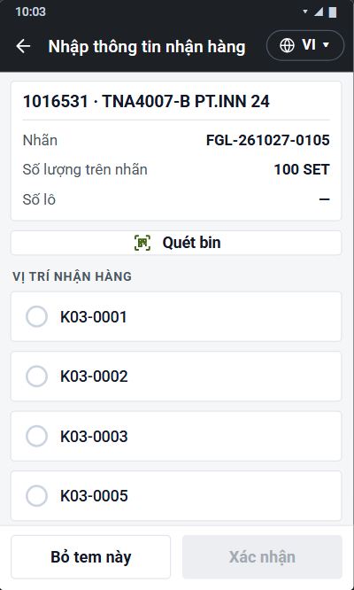
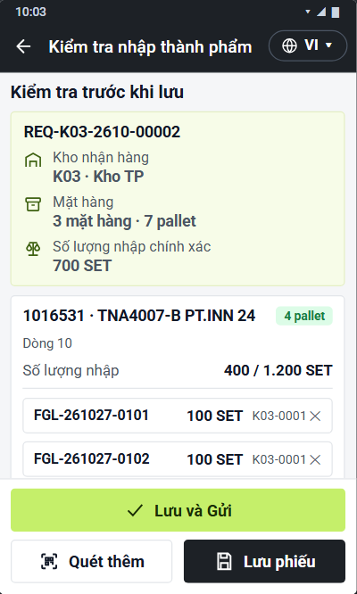
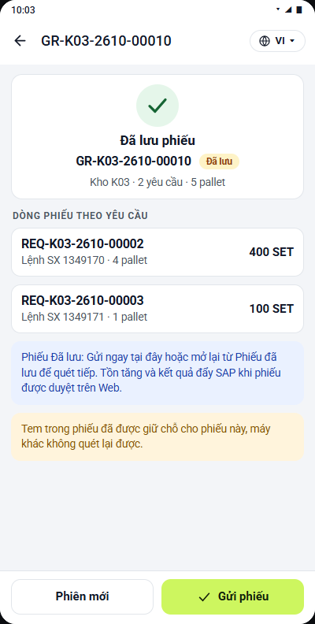
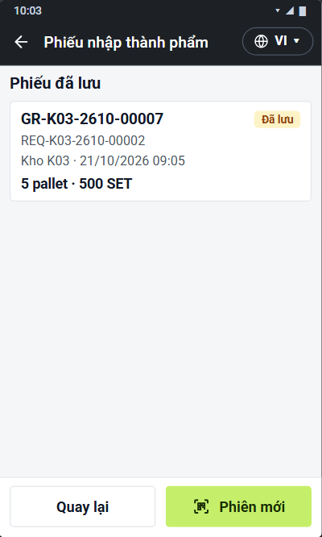
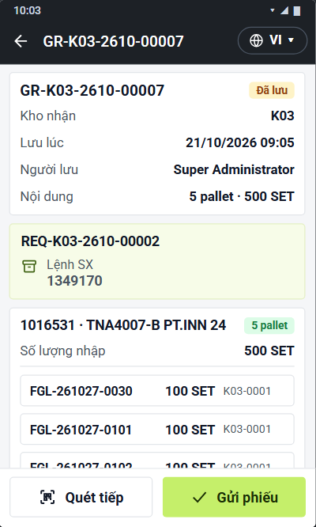
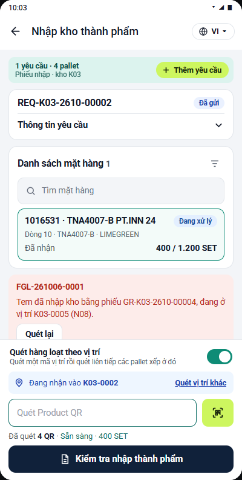
5.4Lập phiếu nhập kho
Kho vận › Nhập kho thành phẩm › Phiếu nhập kho
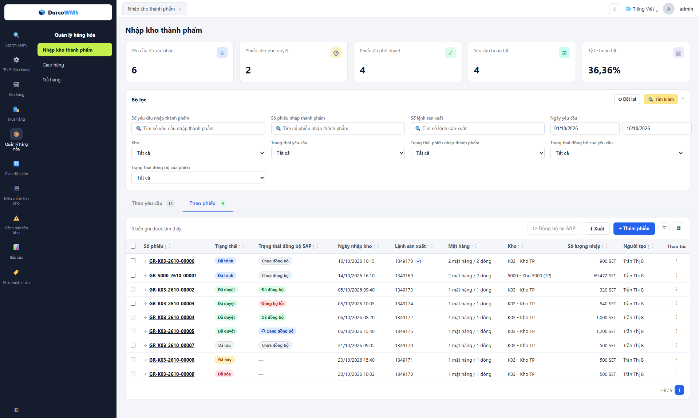
1 2 3 4 5 6 7- 1Tab Theo phiếu: danh sách phiếu nhập kho, cùng màn hình với yêu cầu (5.1).
- 2Đồng bộ lại SAP: gửi lại nhiều phiếu một lần cho các phiếu đã chọn ở cột 4.
- 3+ Thêm phiếu: lập phiếu trên Web khi không quét bằng PDA.
- 4Ô chọn phiếu: chỉ chọn được phiếu Chưa đồng bộ hoặc Đồng bộ lỗi; phiếu khác ô mờ, rê chuột để xem lý do.
- 5Trạng thái đồng bộ SAP của từng phiếu.
- 6Số lượng nhập: tổng số lượng của phiếu. Dấu + cạnh số phiếu mở các dòng mặt hàng.
- 7Thao tác (⋮): In, Phê duyệt, Đồng bộ lại SAP, Hủy phiếu… Nút hiện tùy theo tình trạng của phiếu.
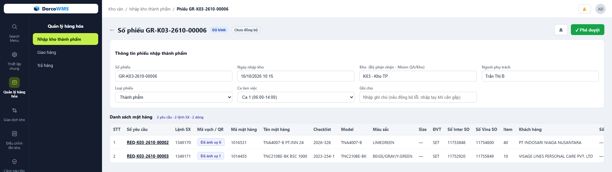
8 9 10 11 12- 8Trạng thái đồng bộ SAP của phiếu, hiện ngay cạnh số phiếu.
- 9Nút thao tác: In phiếu và nút xử lý phiếu (Lưu, Gửi, Phê duyệt…) tùy tình trạng.
- 10Thông tin phiếu: Số phiếu (tự sinh), Ngày nhập kho, Kho, Người phụ trách, Loại phiếu, Ca làm việc, Ghi chú.
- 11Số yêu cầu và Lệnh SX trên từng dòng: một phiếu gom dòng của nhiều yêu cầu cùng kho; dòng tóm tắt ghi số yêu cầu, lệnh SX, số dòng.
- 12Mã vạch / QR: “Đã ánh xạ N”, bấm để xem tem của dòng. Kéo ngang bảng để thấy Số lượng nhập và Vị trí (Bin).